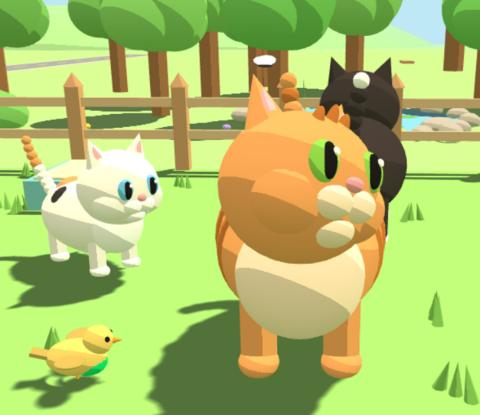

A. One kitten, big eyes. Paws on the rim, staring at the player. Simplest, and reads clearly as a tiny icon.B. Two kittens, one heart. Tilted heads lean together. More story ("a pair to rescue"), but busier when small.C. Night rescue. Black kitten in a box at dusk, fireflies, a hand reaching in. Higher contrast, more emotional and stands out on Poki's bright grid.D. Alternative: "Pet me" close-up. Huge kitten face filling the frame, a hand petting its head, hearts. This is the core action of the game and works well as the app icon.E. A + C mix. One kitten staring at you, warm sunset glow, fireflies, a hand reaching in to pet it.F. Slow blink. A wink at the viewer with a "blink back" bubble. Hints at a mechanic in the game and makes people curious.G. Sanctuary behind. Kitten in a box up front, house, fence, flowers and other cats behind. Says "sanctuary" rather than just "cat", but gets busier.

H. Real in-game 3D. A quick camera grab of Mochi and friends from the actual game, with no editing. Honest to what players get; a final one would need posing, a box prop and better lighting.